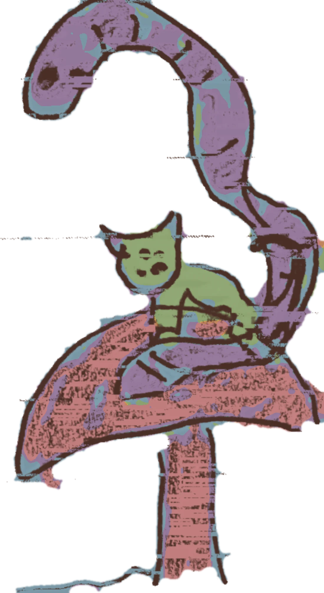

The Mushroom Cat
Draft story, written to fill this space. Nana's own version is coming.

Under the tall trees grows a mushroom as big as an umbrella, and on top of the mushroom sits a small green cat. Some people say the Mushroom Cat is really a goblin. The Mushroom Cat has never said either way.
The Mushroom Cat shares the mushroom with the Caterpillar, a long purple fellow who winds up and around and over, and who asks a great many questions. "Who are you?" asks the Caterpillar. "Where are you going? And why?"
The Mushroom Cat answers each question with another question, which the Caterpillar finds very rude and also very interesting. They have been talking this way for years.
If you walk by, they will ask you something too. It is best to answer kindly, and then to ask them whether they are coming to the Doormouse's tea party on Thursday. They always are.